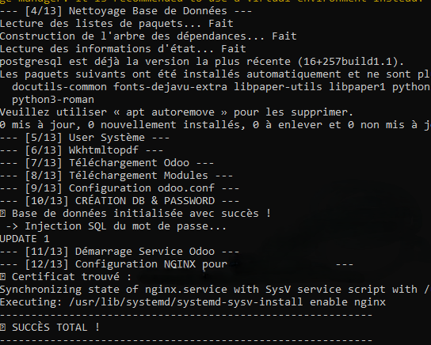
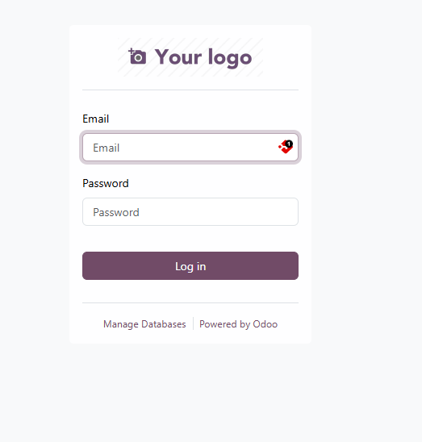

Sécurisation HTTPS (SSL)
Mise à jour et installation de certificats SSL pour garantir la sécurité des accès web.
Immersion en entreprise et mise en pratique.
Missions : Services techniques & infrastructure.
J’ai participé à l’installation et la mise en service de différents services, dont Nextcloud, ainsi qu’à la configuration de certificats SSL.
Mise à jour et installation de certificats SSL pour garantir la sécurité des accès web.
Extension à chaud d'un volume logique LVM suite à l'agrandissement d'un disque virtuel.
Installation et configuration d'une pile LAMP complète pour les besoins d'un stagiaire développeur.
Installation et liaison d'un client Roundcube à une base de données mailserver pour le domaine neoresilia.fr.
Installation de Dolibarr et intégration du module Sellyoursas pour la gestion automatisée d'abonnements SaaS.
Installation du service Headwind MDM pour la gestion centralisée de terminaux Android (Tablettes/Smartphones).
Mise en place d'un environnement Nextcloud sous Docker pour les tests de production d'un stagiaire développeur.
Missions : Services techniques & infrastructure.
J’ai participé à l’installation et la mise en service de différents services, ainsi qu’à la configuration de certificats SSL. J’ai également réalisé de la maintenance matérielle sur les serveurs et postes clients.
Déploiement automatisé de la solution de sécurité Wazuh sur une infrastructure multi-VM.
Automatisation de l'installation et résolution de problèmes réseau (DNS) via script.
Installation automatisée d'Odoo ERP avec sécurisation SSL
Script d'interface pour le déploiement sélectif de mises à jour système via JSON.
Orchestration de montées de version majeures (Debian/Ubuntu) via interface interactive.
Installation de l'outil d'automatisation n8n sous Docker pour un client avec persistance des données.
Installation et configuration réseau sous OPNSense, puis migration vers pfSense selon les besoins client.
Mise en production de services personnalisés avec gestion d'API et hébergement sous Plesk.
Réduire le temps de déploiement d'un environnement ERP complexe (passant de 30 min à 5 min) tout en garantissant une installation propre, sécurisée et immédiatement opérationnelle sur des instances Ubuntu/Debian.
Avant de lancer le script, une configuration manuelle du DNS (1.1.1.1) doit être effectuée sur la machine pour garantir le bon téléchargement des paquets. Le script prend ensuite le relais pour installer les dépendances et configurer le serveur web Nginx avec vos certificats SSL.
Ce projet inclut une documentation détaillée conçue pour une utilisation simple et précise. Elle guide l'utilisateur pas à pas, de la préparation de la VM jusqu'à la récupération des identifiants finaux dans le fichier de configuration.
 

L'objectif était de sécuriser l'infrastructure réseau en installant un pare-feu open-source robuste pour gérer les flux, les accès distants et la protection du parc informatique.
Le projet s'est déroulé en deux étapes majeures :
Configuration de règles de pare-feu et sécurisation des interfaces WAN/LAN.

L'objectif était de mettre en place une interface Webmail moderne et fluide pour les utilisateurs du domaine neoresilia.fr, en utilisant l'isolation logicielle pour faciliter la maintenance.
La mise en production a été réalisée via une architecture conteneurisée :
Utilisation de Docker Compose, gestion de base de données MariaDB/MySQL et sécurisation des échanges via certificats SSL.